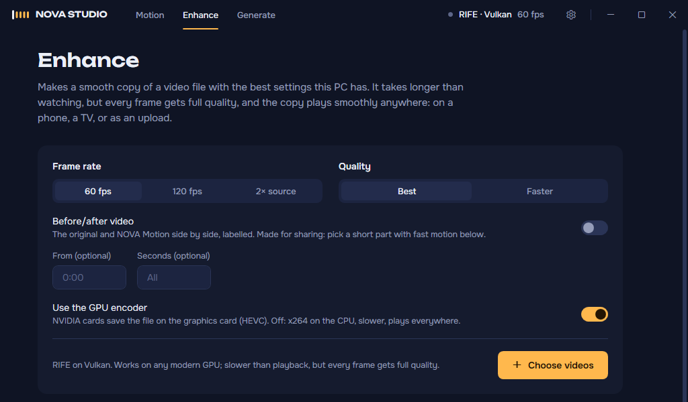

Watch at your screen's full frame rate.
Films and most online video are made at 24 or 25 frames a second. NOVA Motion generates the frames in between with AI, live, on your own graphics card, so motion looks smooth instead of stepping. Free and open source for Windows.
Windows 10 and 11. Best on NVIDIA graphics, including a GTX 1650 laptop; Intel and AMD work too.
See it on real footage
The original on the left, NOVA Motion on the right, both playing at 60 frames a second. Made with NOVA Motion's own before/after export.
Smooth motion, without a high-end PC
NOVA Motion is a full video player with the smoothing built in. It measures your graphics card and uses what it can really keep up with.
-
Real AI frames, live
RIFE, an open AI model, makes the in-between frames while you watch. The frames from the video itself are never touched.
-
Fits your graphics card
A one-time tuning run measures each model on your PC. On cards like a GTX 1650 the AI works on a half-size copy and only its frames are scaled up, which is four times less work.
-
YouTube and 1,000+ sites
Paste a link, or send the video you're watching from Chrome or Edge with the browser extension. It picks up where you stopped.
-
Steady, even when it's hard
If frames start dropping, it switches to a lighter setting on its own instead of stuttering. One click plays without smoothing.
-
Smooth copies of your files
Enhance saves a smooth version of any video that plays anywhere, or a labelled before/after clip to share.
-
Free and open
GPL-3.0. No account, no watermark, no upload: everything runs on your PC.

Tested on real PCs
Real playback of 1080p video, with the setting NOVA Motion picked on its own.
| PC | Video | Result |
|---|---|---|
| RTX 4070 desktop | 24 fps film to 60 | Smooth, AI at full size |
| GTX 1650 laptop | 24 fps film to 72 on a 144 Hz screen | Smooth, AI at half size |
| GTX 1650 laptop | 25 fps video | Plays at 50, the most this card keeps up with |
Measure your own PC with benchmark.cmd, and share the result in a GitHub issue to help others with the same card.
What runs on your PC
| Graphics | How NOVA Motion runs |
|---|---|
| NVIDIA RTX | RIFE on TensorRT, the fastest path, at your screen's refresh rate. |
| NVIDIA GTX 16 | RIFE on TensorRT with the AI at half size, 60 fps or an even rate for your screen. |
| Other NVIDIA, AMD, Intel | RIFE on Vulkan when tuning shows it keeps up, MVTools otherwise. Supported, tested less so far. |
Part of NOVA Studio
NOVA Motion is the first module of NOVA Studio, a set of AI video tools that run on your own graphics card.
Motion
Available
Real-time smoothing for files and online video.
Enhance
Available
Smooth copies of files. AI upscaling is next.
Generate
In development
Images and short clips from open models, handed straight to Enhance.
Follow progress: watch the repository's releases on GitHub.